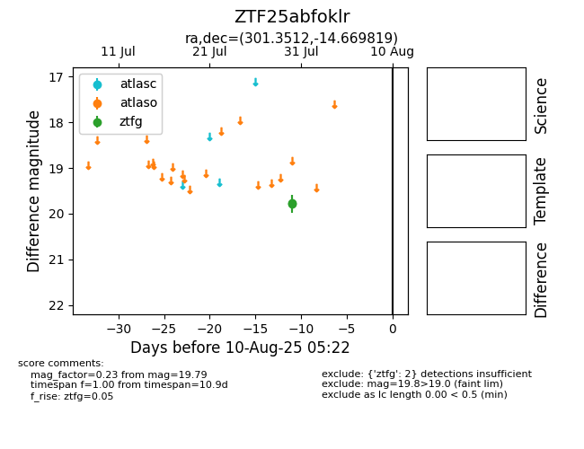

Target ZTF25abfoklr at 2025-08-10 05:22, see:
FINK: fink-portal.org/ZTF25abfoklr
Lasair: lasair-ztf.lsst.ac.uk/objects/ZTF25abfoklr
ALeRCE: alerce.online/object/ZTF25abfoklr
alt names
ZTF25abfoklr (ztf,fink)
coordinates:
equatorial (ra, dec) = (301.3512,-14.66982)
galactic (l, b) = (27.6090,-22.86435)
photometry
last ztfg=19.79
2 ztfg detections
